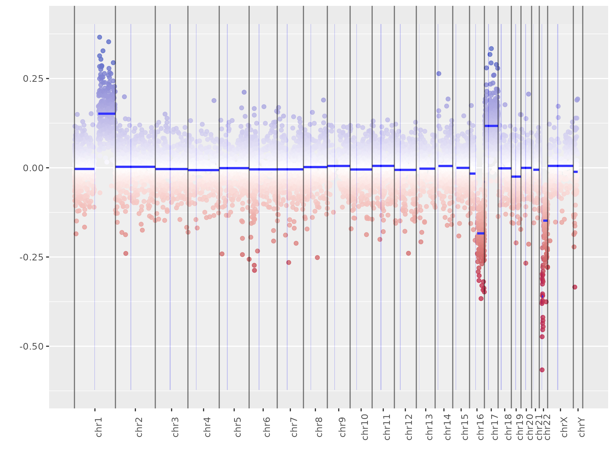
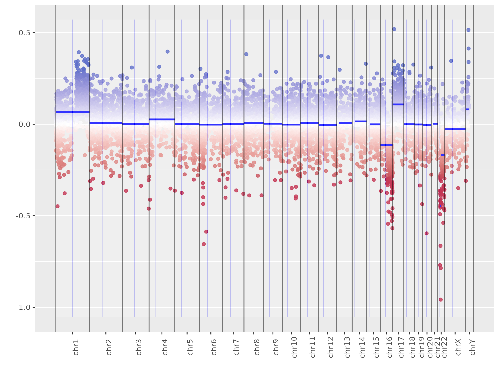
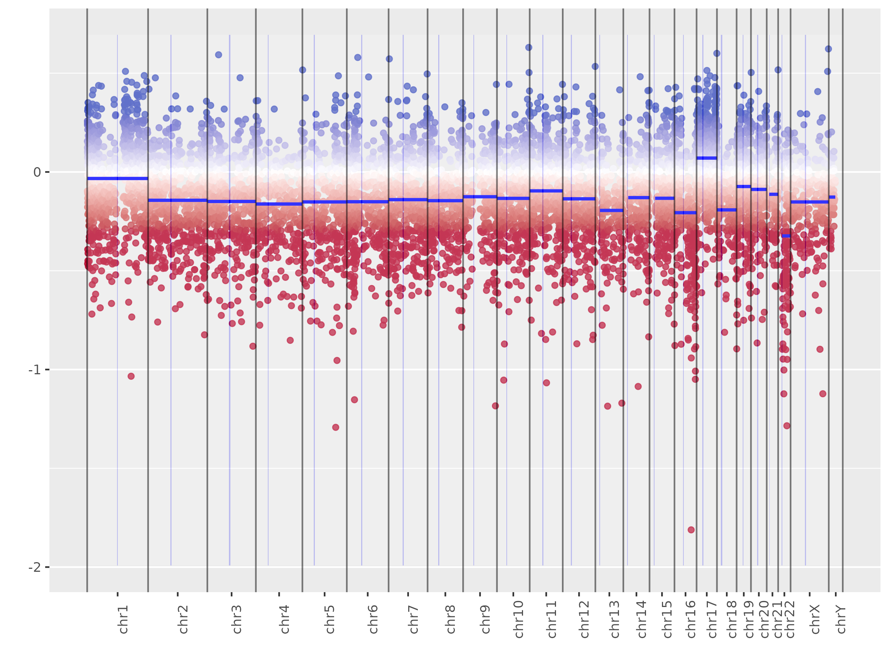
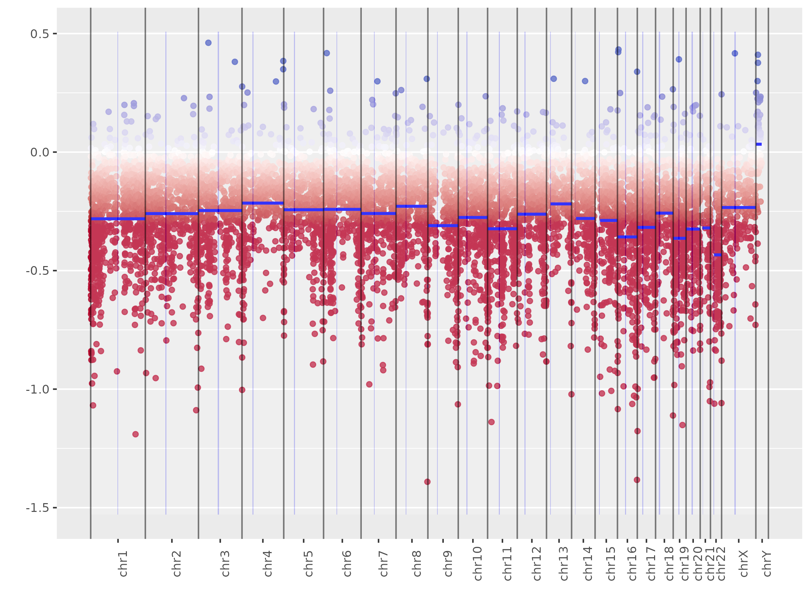
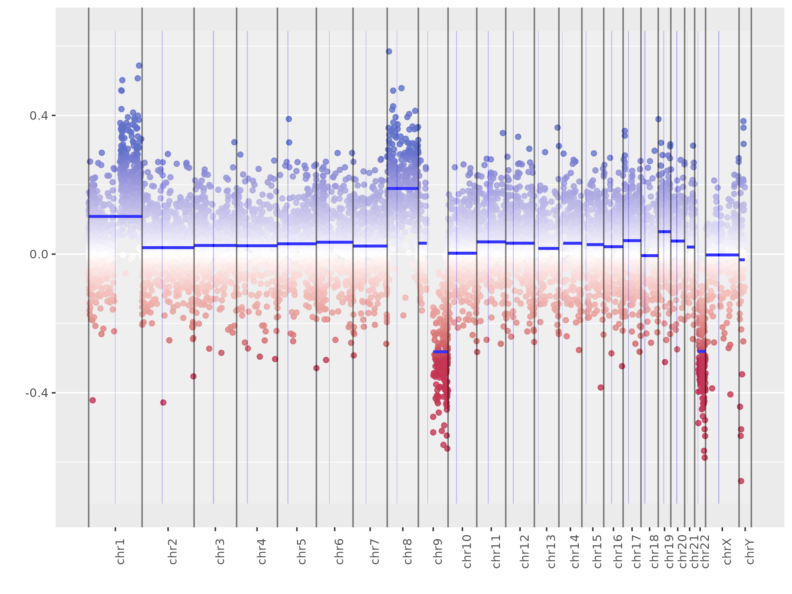
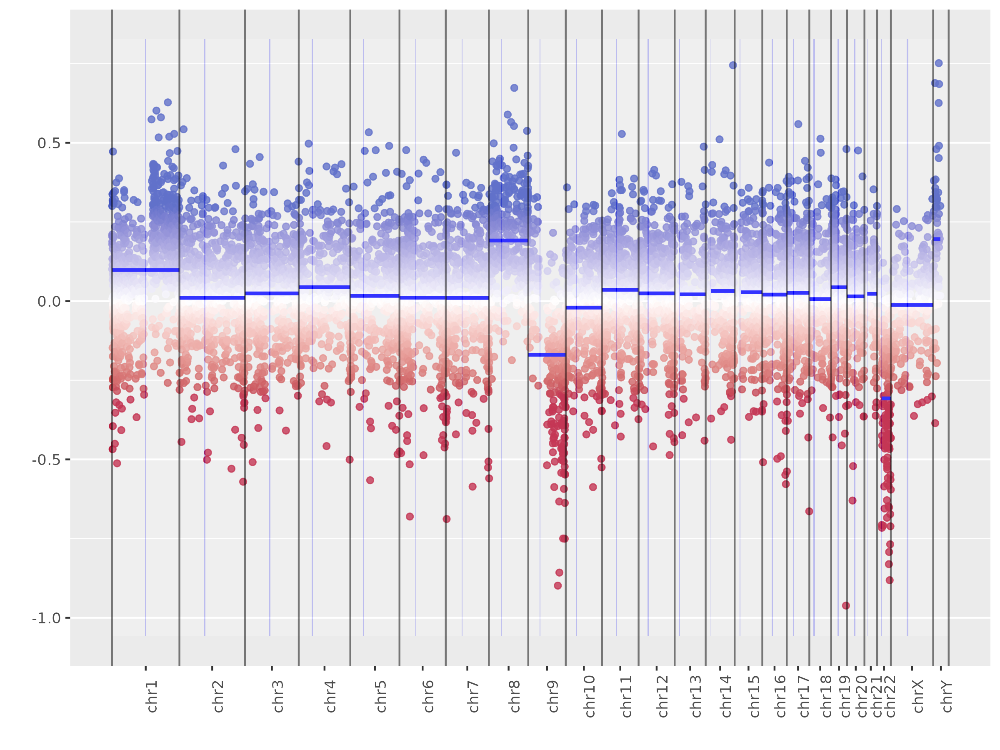
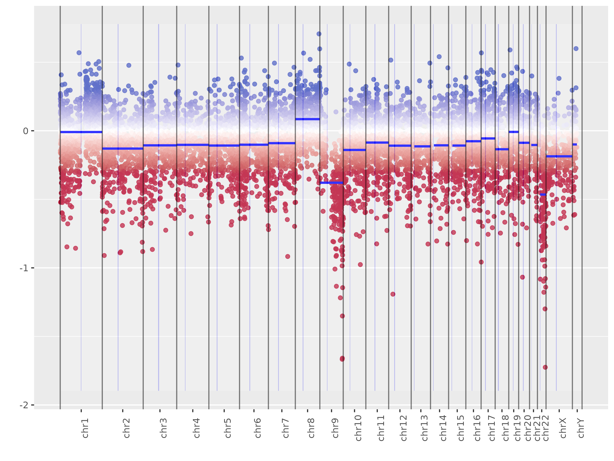
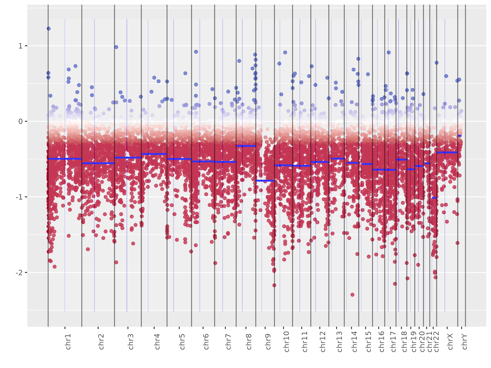
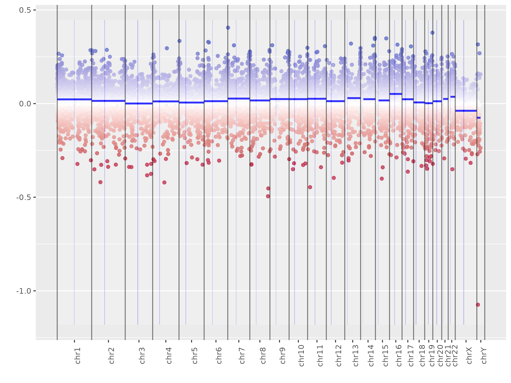
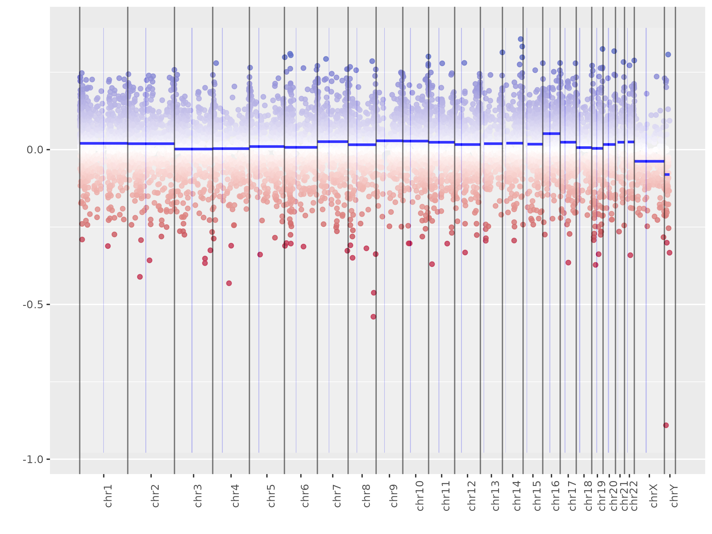

| Sample/metadata | Input [ng] | CNV |
|---|---|---|
| Sample: S_30 Patient: Patient_12 Age: 8 [m/f]: f DNA origin: FF MC Int. Diag.: ATRT_SHH CrossNN MC: ATRT_SHH NanoDiP MC: ATRT_SHH |
50.0 |  |
| Sample: S_30 Patient: Patient_12 Age: 8 [m/f]: f DNA origin: FF MC Int. Diag.: ATRT_SHH CrossNN MC: ATRT_SHH NanoDiP MC: ATRT_SHH |
10.0 |  |
| Sample: S_30 Patient: Patient_12 Age: 8 [m/f]: f DNA origin: FF MC Int. Diag.: ATRT_SHH CrossNN MC: ATRT_SHH NanoDiP MC: ATRT_SHH |
2.0 |  |
| Sample: S_30 Patient: Patient_12 Age: 8 [m/f]: f DNA origin: FF MC Int. Diag.: ATRT_SHH CrossNN MC: GBM_RTK_II NanoDiP MC: GBM_RTK_II |
0.4 |  |
| Sample: S_32 Patient: Patient_12 Age: 9 [m/f]: f DNA origin: CSF MC Int. Diag.: ATRT_SHH CrossNN MC: ATRT_SHH NanoDiP MC: ATRT_SHH |
50.0 |  |
| Sample: S_32 Patient: Patient_12 Age: 9 [m/f]: f DNA origin: CSF MC Int. Diag.: ATRT_SHH CrossNN MC: ATRT_SHH NanoDiP MC: ATRT_SHH |
50.0 | |
| Sample: S_32 Patient: Patient_12 Age: 9 [m/f]: f DNA origin: CSF MC Int. Diag.: ATRT_SHH CrossNN MC: ATRT_SHH NanoDiP MC: ATRT_SHH |
10.0 |  |
| Sample: S_32 Patient: Patient_12 Age: 9 [m/f]: f DNA origin: CSF MC Int. Diag.: ATRT_SHH CrossNN MC: ATRT_SHH NanoDiP MC: ATRT_SHH |
2.0 |  |
| Sample: S_32 Patient: Patient_12 Age: 9 [m/f]: f DNA origin: CSF MC Int. Diag.: ATRT_SHH CrossNN MC: ATRT_SHH NanoDiP MC: PLEX_PED_B |
0.4 |  |
| Sample: S_47 Patient: Neg_CTRL_01 Age: [m/f]: DNA origin: Water MC Int. Diag.: CrossNN MC: ATRT_SHH NanoDiP MC: PLEX_PED_B |
0.0 |  |
| Sample: S_48 Patient: Neg_CTRL_02 Age: [m/f]: DNA origin: Water MC Int. Diag.: CrossNN MC: ATRT_SHH NanoDiP MC: PLEX_PED_B |
0.0 |  |